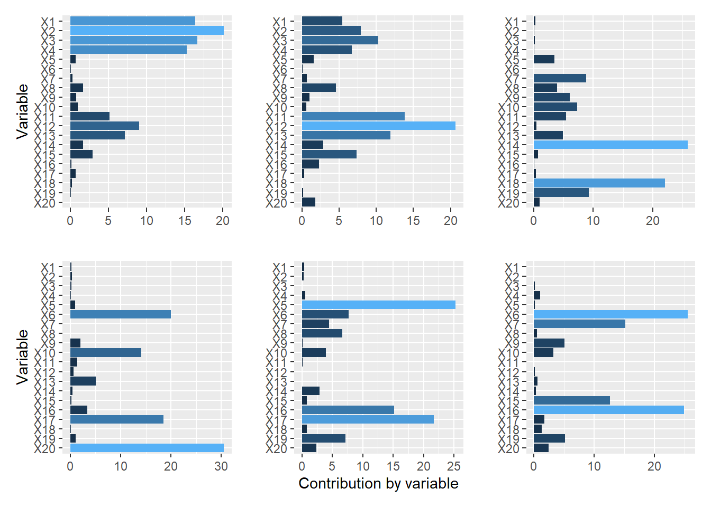
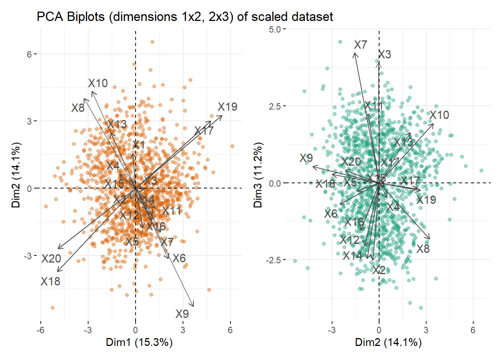

Chemical Sample Classification Report
Principal Component Analysis
Suitability
Principal Component Analysis attempts to reduce the variability in a dataset to fewer, linearly uncorrelated ‘principal components’.
The sample dataset appears suitable for PCA based on correlations. This is statistically confirmed with a KMO test value of 0.71 which is greater than the accepted threshold for PCA suitability (0.6).
Only three variables have a low sampling adequacy, with X15 having a value of 0.46.
MSAi_band | Suitability | Variables |
|---|---|---|
0.8-0.89 | Excellent | X12, X13 |
0.7-0.79 | Good | X2, X3, X5, X6, X8, X11, X14, X16, X17, X18, X19, X20 |
0.6-0.69 | Mediocre | X7, X9, X10 |
0.5-0.59 | Marginal | X1, X4 |
< 0.5 | Unsuitable | X15 |
Components
Screeplots and Horn's Parallel Analysis help determine how many components to retain. The visual approach, where eigenvalues (representing variance explained) are plotted against components and parallel analysis indicate 4 components.
Implementing PCA
Most variables load on at least one component but loadings on components 5, 6, etc. will not be retained. For example, X20 is highly loaded on the fourth component but not contributing elsewhere.
The PCA biplots show correlations discussed in Exploratory Data Analysis in the components.
Angles between variables:
- close to 0° indicate a strong positive correlation (X17, X19)
- close to 180° indicate a strong negative correlation (X17, X18)
- close to 90° are uncorrelated (X8, X17)
The length of the vector indicates the importance of that variable in explaining the variance.
Figure 2 shows some strong correlations captured in the first two dimensions, while the third dimension is more difficult to interpret.
